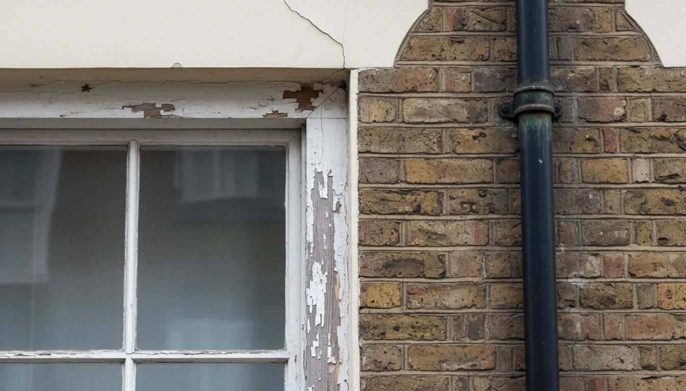
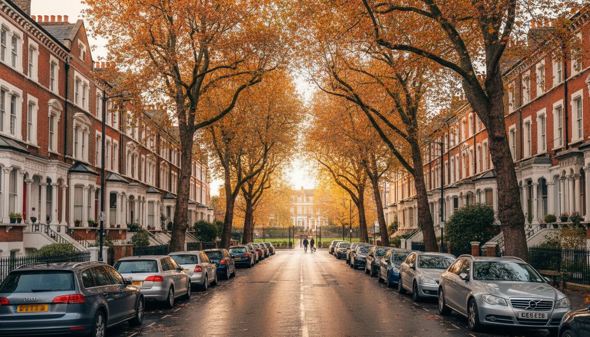

מה לבדוק לפני שחותמים על נכס בלונדון
למה ישראלים מגלים בעיות אחרי שחותמים
בישראל, חתמתם על חוזה - נגמר. שני הצדדים מחויבים. בלונדון? לא ככה. בקניית דירה בלונדון, שום דבר לא מחייב עד ה-exchange of contracts. עד הרגע הזה, המוכר יכול להחליט שהוא לא מוכר. הוא יכול לקבל הצעה גבוהה יותר ולהעדיף אותה - הבריטים קוראים לזה gazumping, וזה חוקי לחלוטין.
ישראלים שקונים נכס בלונדון מגיעים עם ההנחות מהבית. הם חושבים שברגע שהציעו מחיר והמוכר הסכים, זה סגור. הם ממהרים עם הבדיקות, לפעמים מדלגים על כמה מהן, כי הם רוצים לסגור מהר. ואז, אחרי ה-exchange - מגלים שה-leasehold קצר מדי, שיש major works מתוכננים בעוד שנה שיעלו עשרות אלפי פאונד, שהדירה בבניין listed ואי אפשר להחליף חלון בלי אישור.
וזה קורה גם לאנשים חכמים. אנשים שעשו exit, שיש להם עורכי דין טובים, שהם לא תמימים. הם פשוט לא יודעים מה לשאול - כי הם מגיעים מעולם שבו הבדיקות האלה עובדות אחרת.
הפער הזה בין מה שישראלים מניחים לבין איך שזה עובד פה - זה מה שהופך את הבדיקות לפני קנייה לקריטיות. לא בגלל שהמערכת מסוכנת. בגלל שהיא שונה ממה שמכירים.
ויש עוד דבר: התהליך בבריטניה לוקח זמן. בין הצעת מחיר מקובלת ל-exchange of contracts עוברים בדרך כלל שמונה עד שנים-עשר שבועות. בתקופה הזו כולם עובדים - סוליסיטור, surveyor, המלווה אם יש משכנתא - אבל שום דבר לא סופי. ישראלים מתוסכלים מהקצב. אבל הזמן הזה הוא ההזדמנות שלכם לבדוק הכל. אל תקצרו אותו.
ה-survey - מה זה ובאיזה רמה
ה-survey הוא לא "בדק בית" ישראלי. בישראל, מהנדס מגיע לדירה ובודק סדקים, רטיבות, אינסטלציה. בלונדון, ה-survey הוא סיפור אחר לגמרי - מסמך מקצועי שמוזמן בנפרד, מבוצע על ידי surveyor מוסמך של RICS, ויש לו שלוש רמות:
| רמה | מה כולל | מתאים ל- |
|---|---|---|
| Level 1 - Condition Report | מצב הנכס, סיכונים ובעיות דחופות | נכסים חדשים ופשוטים |
| Level 2 - HomeBuyer Report | ליקויים, תחזוקה, תיקונים עתידיים, הערכת שווי | נכסים קונבנציונליים במצב סביר |
| Level 3 - Building Survey | מבנה, גג, רטיבות, שקיעות, חשמל ואינסטלציה | נכסים ישנים, גדולים, לפני שיפוץ |
אם אתם קונים דירה ויקטוריאנית ב- Hampstead או בית תקופתי ב- St John's Wood - אתם צריכים Level 3. בלי יוצא מן הכלל. עלות של £600 עד £1,500 ויותר, תלוי בגודל ובמיקום. זה נשמע הרבה. זה כלום לעומת מה שתגלו אחרי הרכישה אם לא עשיתם את זה.
ומה ה-survey לא בודק? הוא לא בודק פוטנציאל עיצובי. הוא לא אומר לכם אם אפשר לפתוח את המטבח לסלון, אם התקרה מאפשרת גלריה, או אם החלל מתאים למשפחה עם שלושה ילדים. הוא בודק מצב - לא אפשרויות. בשביל זה צריך מישהי עם עין של מעצבת ורקע אדריכלי שתסתכל על הנכס לפני שאתם חותמים.
דבר חשוב נוסף: ה-survey לא נעשה על ידי הסוליסיטור. הסוליסיטור עוסק בצד המשפטי. ה-survey הוא הזמנה נפרדת שאתם אחראים עליה. ישראלים רבים לא יודעים את זה ומניחים שעורך הדין מטפל בהכל. הוא לא מטפל. אתם צריכים להזמין surveyor בעצמכם, לשלם בנפרד, ולקרוא את הדוח. ואם לא הבנתם משהו בדוח - תשאלו. הבריטים מנומסים מדי בניסוח הדוחות האלה, ו"minor concern" בשפה שלהם יכול להיות בעיה רצינית בשפה שלנו.
מה הסוליסיטור באמת בודק (ומה לא)
הסוליסיטור שלכם עושה conveyancing - בעצם העברת הבעלות המשפטית על הנכס. זה מה שהוא כן עושה:
- בדיקת title - שהמוכר אכן הבעלים ושאין עיקולים או שעבודים
- local authority search - בדיקה מול הרשות המקומית: תוכניות כבישים, הפקעות, הפרות תכנון, בנייה ללא אישור
- environmental search - בדיקות סביבתיות: סיכון הצפה, זיהום קרקע, מפגעים סביבתיים
- water and drainage search - בדיקת מים וביוב
עלות הבדיקות האלה: £250 עד £400 בממוצע. הזמנים משתנים - ב- Camden למשל, local authority search יכול לקחת 50 ימי עבודה. ברשויות אחרות, מהר יותר. חשוב לדעת: הסוליסיטור גם בודק את ה-planning history של הנכס. האם היו בקשות תכנון שנדחו? האם יש תנאים מיוחדים על הנכס? האם בוצעו שינויים בלי אישור? כל אלה יכולים להשפיע על מה שתוכלו לעשות עם הנכס אחרי הרכישה.
אבל - וזה חשוב - הסוליסיטור לא בודק:
- את המצב הפיזי של הדירה. בכלל לא. הוא לא מגיע לנכס.
- את פוטנציאל השיפוץ. הוא לא יודע לומר לכם אם אפשר להזיז קיר או להוסיף חדר.
- את השכונה. הוא לא יגיד לכם אם יש רעש בלילה או אם הגינה הסמוכה הפכה לאתר בנייה.
- את ההתאמה למשפחה. הוא לא חושב על איפה הילדים ישחקו או כמה רחוק הפארק.
הפער הזה - בין מה שאתם חושבים שהסוליסיטור מכסה לבין מה שהוא באמת עושה - זו הסיבה שאנשים מגלים בעיות אחרי שסגרו עסקה.
leasehold - הבדיקות שחייבים לעשות
רוב הדירות בלונדון הן leasehold. זה אומר שאתם לא קונים את הקרקע - אתם קונים זכות להחזיק בנכס לתקופה מוגדרת. וה-leasehold יכול להיות מצוין או מפחיד, תלוי בפרטים הקטנים.
להסבר מלא על ההבדל בין leasehold ל-freehold ומה זה אומר בפועל - ליסהולד או פריהולד.
service charge. בקשו את היסטוריית ה-service charge של שלוש השנים האחרונות. service charge בלונדון נע בדרך כלל סביב £1,000 עד £2,000 בשנה, אבל יכול להיות הרבה יותר, במיוחד בבניינים ישנים או באזורים יקרים. בדקו מגמת עלייה - מחקרים מראים עליות של 5-8% בשנה בממוצע.
ground rent. חוק חדש מ-2022 קובע ground rent אפסי על leases חדשים. אבל אם אתם קונים lease קיים, בדקו מה כתוב. יש leases עם סעיפי הכפלה של ground rent כל כמה שנים. הממשלה הבריטית פרסמה בינואר 2026 הצעת חוק לתקרת ground rent של £250 לשנה, עם ירידה לאפס אחרי 40 שנה. אבל עד שזה יהפוך לחוק - בדקו את מה שכתוב ב-lease שלכם.
major works. שאלו אם יש עבודות משמעותיות מתוכננות בבניין. גג חדש, חזית, מעלית, אינסטלציה - אלה עלויות שמתחלקות בין כל בעלי הדירות. הפתעה של £20,000-£30,000 על major works זה לא נדיר. section 20 notice הוא המסמך שחייבים לשלוח לדיירים לפני major works מעל £250 - אם יש כזה בתהליך, תדעו שמשהו גדול מתקרב. בקשו גם לראות את הדוחות הכספיים של חברת הניהול - sinking fund בריא אומר שהבניין מנוהל כמו שצריך.
Licence to Alter. אם אתם מתכננים לשפץ - וסביר שכן, כי רוב הישראלים שקונים נכס בלונדון רוצים להתאים אותו לטעם שלהם - רוב ה-leases דורשים אישור כתוב מבעל ה-freehold. בדקו את התנאים ב-lease. יש freeholders שמאשרים בקלות. יש כאלה שמכבידים ודורשים תוכניות מפורטות, הפקדות כספיות, ואישורים שלוקחים חודשים. הסוליסיטור שלכם צריך לבדוק את כל זה באמצעות טפסי LPE1. אם ה-freeholder ידוע כבעייתי - זה משהו שכדאי לדעת לפני הרכישה, לא אחריה.
חברת הניהול. מי מנהל את הבניין? management company טובה שומרת על תחזוקה, מגיבה מהר, ומנהלת את הכספים בצורה שקופה. חברה גרועה הופכת את החיים לסיוט - במיוחד כשאתם בישראל ולא יכולים להגיע לאסיפת דיירים. בקשו לראות את הפרוטוקולים מהאסיפות האחרונות. הם יגידו לכם הרבה על מה שקורה בבניין.
מצב הבניין והדירה

מעבר ל-survey, יש דברים שכדאי לבדוק בעצמכם או עם מישהו שמכיר נכסים בלונדון:
רטיבות. בעיה נפוצה בנכסים ישנים בלונדון, במיוחד בדירות קרקע ובמרתפים. חפשו סימנים: כתמים על קירות, ריח עובש, צבע מתקלף, שלד עץ רך למגע. ה-survey צריך לזהות את זה, אבל לא תמיד תופסים הכל בביקור אחד. טיפ: תבואו אחרי יום גשום. לונדון לא חוסכת בגשם, אז אם יש רטיבות - תראו אותה.
שקיעות. subsidence. סדקים אלכסוניים בקירות, דלתות ש"נתקעות", רצפות לא ישרות. בחלקים מסוימים של לונדון, במיוחד על קרקע חרסית, זו בעיה אמיתית. ביטוח בניין שלא מכסה subsidence - סימן אזהרה.
חלונות. בבניינים בשטח conservation area, החלפת חלונות דורשת אישור. אם החלונות ישנים ולא יעילים אנרגטית - זו עלות שתצטרכו לחשב, ולפעמים ההגבלות יקבעו איזה סוג חלון מותר.
EPC. Energy Performance Certificate - תעודת ביצוע אנרגטי. בעת מכירה חייב להיות EPC תקף, אבל אין דרישת מינימום לרוכשים. עם זאת, דירוג נמוך (D ומטה) אומר חשבונות חימום גבוהים - ובלונדון, חימום בחורף זה לא סתם. חשבונות של מאות פאונד בחודש בנכסים ויקטוריאניים עם בידוד גרוע זה מציאות. אם אתם מתכננים להשכיר את הנכס בין ביקורים, שימו לב שמשכירים חייבים לעמוד בדירוג EPC מינימלי של E, והדרישה צפויה לעלות ל-C בשנים הקרובות.
listed building. בלונדון יש כ-25,000 מבנים רשומים. אם הנכס שלכם באחד מהם, ההגבלות על שינויים הן חמורות - לפעמים אי אפשר להחליף חלון, לשנות דלת חיצונית, או אפילו להתקין צלחת לוויין. בדקו את הסטטוס באתר Historic England לפני הרכישה, לא אחריה. גם אם הבניין עצמו לא listed, בדקו אם הוא ב-conservation area - שם יש הגבלות נוספות על שינויים חיצוניים.
 מבנה רשום בלונדון - מתי אסור לגעת בכלוםקניתם נכס בלונדון ורוצים לשפץ? אם הנכס הוא listed building, יש דברים שאסור לגעת בהם בלי אישור מיוחד. מה זה אומר בפועל ואיך עובדים בתוך המגבלות.
מבנה רשום בלונדון - מתי אסור לגעת בכלוםקניתם נכס בלונדון ורוצים לשפץ? אם הנכס הוא listed building, יש דברים שאסור לגעת בהם בלי אישור מיוחד. מה זה אומר בפועל ואיך עובדים בתוך המגבלות.
ביטוח בניין. מי מבטח, מה מכוסה, כמה עולה. ב-leasehold, הביטוח בדרך כלל חלק מה-service charge, אבל ודאו שהוא מספק. בדקו שהביטוח מכסה subsidence, flood damage, ו-rebuilding costs מלאים. אם הביטוח חריג - כלומר כולל exclusions משמעותיים - זה סימן שיש בעיה שכבר ידועה.
אינסטלציה וחשמל. בנכסים ויקטוריאניים, הצנרת עלולה להיות מעופרת. חיווט חשמלי ישן שלא עומד בתקן הנוכחי. ה-survey מזהה חלק מזה, אבל שאלו ספציפית מתי עודכנו המערכות האלה. חיווט מחדש של דירה בלונדון יכול לעלות אלפי פאונד ולהוסיף שבועות ללוח הזמנים של כל שיפוץ עתידי.
שכונה ואורח חיים - הבדיקות שלא כתובות בחוזה

אף solicitor וסוקר לא יגידו לכם את זה. אתם צריכים לבדוק בעצמכם.
תבואו ביום רגיל. לא רק בשבת בבוקר כשהכל שקט ויפה. תבואו ביום חמישי בערב. תבואו ביום חול בשעות שיא. איך הרחוב מרגיש? יש רעש? פקקים? עבודות בנייה בסביבה?
תחבורה. כמה רחוק ה-tube? כמה זמן לוקח באמת להגיע ל-West End ביום חול? יש קוי אוטובוס? עם ילדים ומזוודות, כמה נוח להגיע מ-Heathrow? בדקו גם חניה - אם אתם מתכננים לשכור רכב בביקורים, חניה באזורים מסוימים בלונדון היא כאב ראש. resident permit, שעות הגבלה, congestion charge - כל אלה משפיעים על השימוש היומיומי.
פארקים וילדים. אם המשפחה מגיעה לשלושה שבועות באוגוסט, הילדים צריכים מרחב. כמה רחוק הפארק הקרוב? יש גן משחקים? יש מדשאות שאפשר לשחק בהן כדורגל? יש שכונה שנוח להסתובב בה ברגל עם ילדים, או שצריך לנסוע לכל דבר? תבדקו מוזיאונים, ספריות, בריכת שחייה בקרבת מקום. שלושה שבועות עם ילדים משועממים בדירה לונדונית קטנה - זה לא החופשה שדמיינתם.
לסקירה של השכונות שישראלים מעדיפים בלונדון - השכונות שישראלים קונים בהן.
תוכניות עתידיות. ה-local authority search יזהה חלק מזה, אבל כדאי גם לבדוק באופן עצמאי. יש תוכנית בנייה גדולה ממול? פיתוח תחבורה שישנה את אופי השכונה? זה יכול להיות חיובי או שלילי - אבל צריך לדעת.
שכנים. בבניין משותף, השכנים חשובים. זה נשמע טריוויאלי, אבל מי שקונה נכס second home ומגיע רק כמה פעמים בשנה - צריך שכנים שלא יהפכו את החיים לסיוט. דברו עם הפורטר אם יש, הסתכלו על המצב בחדר המדרגות, שאלו. בדקו גם אם יש Airbnb בבניין - דיירים זמניים שמתחלפים כל שבוע משפיעים על האווירה ועל התחזוקה.
בתי ספר. אם הילדים מגיעים לתקופות ארוכות, כדאי לבדוק אפשרויות חינוך לשהיות קצרות. לא כל שכונה מציעה את זה. גם אם לא רלוונטי עכשיו - אם יש תוכנית להעביר חלק מהשנה בלונדון, כדאי שהמידע הזה יהיה חלק מהשיקול.
רשימת בדיקות לפני קניית דירה בלונדון
- אורך lease - מעל 80 שנה? רצוי מעל 90
- service charge - היסטוריה של 3 שנים, מגמת עלייה
- ground rent - כמה, ויש סעיף הכפלה?
- major works - יש עבודות מתוכננות? אומדן עלות?
- Licence to Alter - מה התנאים לשיפוץ?
- survey Level 3 - במיוחד לנכסים ישנים
- listed building status - לפני, לא אחרי
- EPC rating - ומה המשמעות לחימום ובידוד
- ביטוח בניין - מכסה subsidence?
- בדיקות הסוליסיטור - title, local authority, environmental, water
- planning history - אישורים קודמים, סירובים, תנאים
- ביקור בשכונה - ימים ושעות שונים
- תחבורה - tube, אוטובוסים, נגישות ל-Heathrow
- פארקים ומרחבים ירוקים - למשפחה
- שכנים ובניין - מצב, תחזוקה, אווירה
הרשימה הזו נראית ארוכה. היא ארוכה. אבל כל פריט פה הוא משהו שישראלים גילו בדרך הקשה - אחרי שכבר חתמו. עדיף לבדוק עכשיו מאשר להתחרט אחר כך.
חלק מהבדיקות האלה אני עושה עם לקוחות עוד לפני שמציעים על נכס. קצת על הרקע שלי.
אם כל זה נשמע כמו הרבה - זה כי זה באמת הרבה. ככה אני עוזרת לעשות סדר בכל התהליך.
- שום דבר לא מחייב עד ה- exchange of contracts. המוכר יכול לקבל הצעה גבוהה יותר ולזרוק אתכם - חוקי לחלוטין
- Building Survey (Level 3) עולה £600-1,500 - כלום לעומת מה שתגלו בלי אחד בנכס ויקטוריאני
- lease מתחת ל-80 שנה = בעיה רצינית. הארכה עולה עשרות אלפי פאונד בגלל marriage value
- הסוליסיטור לא בודק את המצב הפיזי של הדירה, לא את פוטנציאל השיפוץ, ולא את השכונה. הוא עושה conveyancing - ותו לא
- major works בבניין יכולות להפתיע ב-£20,000-30,000. בקשו section 20 notices ודוחות כספיים של חברת הניהול
אם אתם מתכננים גם לשפץ אחרי הרכישה - כדאי לקרוא את איך לנהל שיפוץ בלונדון מישראל. כי הבדיקות שעשיתם לפני הקנייה קובעות כמה פשוט או מסובך יהיה השיפוץ אחר כך.
על כל העלויות שמחכות לכם אחרי הרכישה - העלויות שאף אחד לא מספר לכם.
ואם אתם מתלבטים על אישורי תכנון ומה אפשר ומה אי אפשר לעשות עם הנכס - כדאי לבדוק את זה לפני הרכישה. כי לגלות אחרי ה-exchange שאי אפשר להוסיף את החדר שתכננתם זה מסוג ההפתעות שאף אחד לא רוצה.